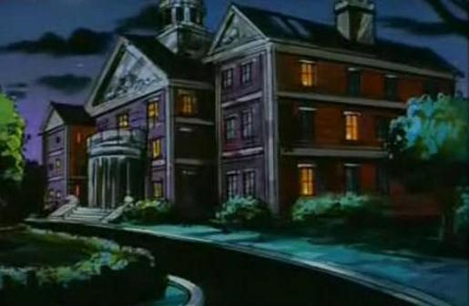

História
X-Men é uma equipe de super-heróis de histórias em quadrinhos épicas publicadas nos Estados Unidos pela Marvel Comics. Criados por Stan Lee e Jack Kirby, estrearam em The X-Men #1, publicada em setembro de 1963, e era formado inicialmente pelo Professor X, fundador da equipe, Ciclope, Fera, Homem de Gelo, Anjo e Garota Marvel (Jean Grey).
Lee inventou o título da série após Martin Goodman recusar o nome inicial, "The Mutants", afirmando que os leitores não sabem o que um "mutante" era.
Os X-Men são mutantes: humanos que, como resultado de um súbito salto evolucionário, nasceram com habilidades super-humanas latentes, que geralmente se manifestam na puberdade.
Consequentemente no espaço, em suas histórias, vários homens comuns têm um intenso medo e/ou desconfiança dos mutantes (cientificamente chamados de Homo superior), que são vistos pelos cientistas em geral como o novo degrau da evolução humana. Logo, muitos os consideram uma ameaça à própria sociedade humana, fato intensificado por mutantes que usam seus poderes para fins criminosos. Para combater estes "mutantes malignos" (tais como Magneto e sua Irmandade de Mutantes) e promover a coexistência pacífica entre as duas raças, o benevolente Professor Charles Xavier, (ou Professor X, o milionário que é, secretamente, um dos maiores telepatas da Terra)
Consequentemente no espaço, em suas histórias, vários homens comuns têm um intenso medo e/ou desconfiança dos mutantes (cientificamente chamados de Homo superior), que são vistos pelos cientistas em geral como o novo degrau da evolução humana. Logo, muitos os consideram uma ameaça à própria sociedade humana, fato intensificado por mutantes que usam seus poderes para fins criminosos. Para combater estes "mutantes malignos" (tais como Magneto e sua Irmandade de Mutantes) e promover a coexistência pacífica entre as duas raças, o benevolente Professor Charles Xavier, (ou Professor X, o milionário que é, secretamente, um dos maiores telepatas da Terra)
Fundou uma academia para treinar jovens mutantes e doutriná-los em seu sonho de "harmonia interracial".
Ocultando sua real intenção do restante do mundo sob a fachada do Instituto Xavier Para Jovens Super-Dotados, Charles deu, assim, início ao seu sonho.
As histórias dos X-Men contam com personagens de diversas etnias sendo, talvez, a revista em quadrinhos mais multicultural já publicada pela Marvel. Este aspecto foi introduzido quando o título, que havia sido cancelado, foi retomado nos anos 1970. Nesta década, o elenco (que contava apenas com mutantes americanos) foi diversificado, adicionando-se personagens da Alemanha (Noturno), Irlanda (Banshee), Canadá (Wolverine), União Soviética (Colossus), Quênia (Tempestade) e Japão (Solaris).
Personagens representando várias outras etnias e cenários culturais foram subsequentemente adicionados. As histórias também retratavam temas relacionados ao status das minorias, incluindo assimilação, tolerância e crenças na existência de uma "raça superior".
Os X-Men se expandiram para o cinema e televisão, incluindo alguns dos mais bem-sucedidos desenhos animados exibidos no Brasil nas manhãs de sábado: X-Men: Animated Series, X-Men Evolution e Wolverine e os X-Men.
As histórias dos X-Men contam com personagens de diversas etnias sendo, talvez, a revista em quadrinhos mais multicultural já publicada pela Marvel. Este aspecto foi introduzido quando o título, que havia sido cancelado, foi retomado nos anos 1970. Nesta década, o elenco (que contava apenas com mutantes americanos) foi diversificado, adicionando-se personagens da Alemanha (Noturno), Irlanda (Banshee), Canadá (Wolverine), União Soviética (Colossus), Quênia (Tempestade) e Japão (Solaris).
Personagens representando várias outras etnias e cenários culturais foram subsequentemente adicionados. As histórias também retratavam temas relacionados ao status das minorias, incluindo assimilação, tolerância e crenças na existência de uma "raça superior".
Os X-Men se expandiram para o cinema e televisão, incluindo alguns dos mais bem-sucedidos desenhos animados exibidos no Brasil nas manhãs de sábado: X-Men: Animated Series, X-Men Evolution e Wolverine e os X-Men.
O ano 2000 viu a estreia bem-sucedida de X-Men filme dirigido por Bryan Singer.
Sua sequência X2: X-Men 2 foi lançada em 2003. E um terceiro filme, X-Men: The Last Stand (X-Men: O confronto Final), desta vez dirigido por Brett Ratner, foi lançado em 26 de maio de 2006. E finalmente, em 3 de Junho de 2011, a 20th Century Fox lançou X-Men: First Class (X-Men: Primeira Classe) onde conta como Charles Xavier (Professor X) e Erik Lehnsherr (Magneto) se conheceram e como se tornaram inimigos. Em 23 de maio de 2014 foi lançado X-Men: Days of Future Past (X-Men: Dias de um Futuro Esquecido), filme baseado no Arco de mesmo nome. E por fim, em 19 de maio de 2016,foi a estréia de X-Men: Apocalypse (X-Men: Apocalipse), supostamente baseado no arco A Era do Apocalipse.
Sua sequência X2: X-Men 2 foi lançada em 2003. E um terceiro filme, X-Men: The Last Stand (X-Men: O confronto Final), desta vez dirigido por Brett Ratner, foi lançado em 26 de maio de 2006. E finalmente, em 3 de Junho de 2011, a 20th Century Fox lançou X-Men: First Class (X-Men: Primeira Classe) onde conta como Charles Xavier (Professor X) e Erik Lehnsherr (Magneto) se conheceram e como se tornaram inimigos. Em 23 de maio de 2014 foi lançado X-Men: Days of Future Past (X-Men: Dias de um Futuro Esquecido), filme baseado no Arco de mesmo nome. E por fim, em 19 de maio de 2016,foi a estréia de X-Men: Apocalypse (X-Men: Apocalipse), supostamente baseado no arco A Era do Apocalipse.

Telefone: 555-6567
Email: xavier_institute_12@gmail.com
Endereço: 1407 Graymalkin Lane, Salem Center, New York